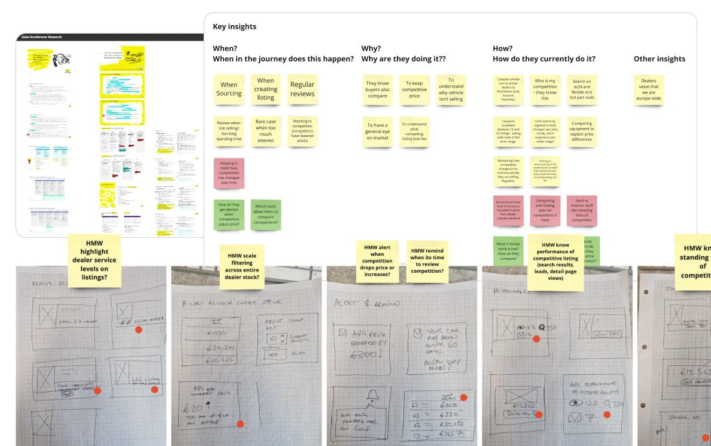

Dealer Pricing Insights
Turning a manual research chore into an in-context pricing signal.

The ask
I was tasked with understanding how dealers price their listings against their competition, and how AutoScout24 could add value. I led UX design, working with a team of engineers, a UX researcher, a content designer and a PM.
Pricing by eye
After reviewing existing research, I built a research plan to fill the gaps in our knowledge. Along with our UX researcher, we ran interviews with dealers in Italy and Germany.
We discovered that dealers searched consumer marketplaces for hours to find their competitors' listings. Prices were reviewed weekly, sometimes daily. They eyeballed differences in equipment and condition across listings, then made a gut-feel call on price. Research also showed dealers had a fixed idea of their competition, which didn't always match the options buyers were considering.

Real competition at a glance
I turned these insights into ideas and built alignment through workshops with the product team.
After several rounds of user feedback on early concepts, I created a solution integrated with their stock list tool. It surfaced the actual competition their customers were considering and where they stood in that market, along with the subtle data on condition and equipment that really informed pricing decisions.

Flagship feature
We launched Competitive Insights as the flagship feature of our new tiered pricing system. Within six months it was the most-used feature in the DealerIQ suite in Germany and Italy.
Dealers on our Dealer Council said it helped them justify pricing decisions and adjust their strategy.
Looking for exact numbers? Get in touch for a full walkthrough.
What v2 needs
In our follow-up feedback, dealers were explicit about what was missing. Transaction and sold data, customisable competitor sets, and evidence that a price change turns into a sale would make it even more valuable.